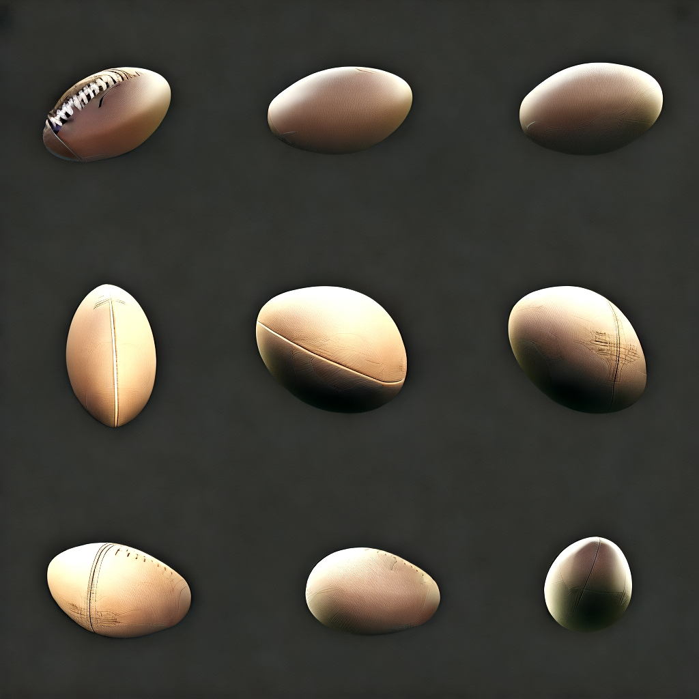

பல காட்சி அம்சத்தைப் பயன்படுத்துவதற்கான வழிகாட்டி
AiCasso இல் உள்ள பல காட்சி அம்சம், உங்கள் படத்தில் உள்ள பொருளை பல கோணங்களில் காண உதவுகிறது. இது 3D வடிவங்களைப் புரிந்துகொள்ள அல்லது தயாரிப்புகளைப் பிரசாரம் செய்ய மிகவும் பயனுள்ளதாக இருக்கும். இந்த அம்சம், பொருளுக்கு பின்னணி இல்லாதபோது சிறப்பாக செயல்படுகிறது, எனவே சிறந்த முடிவுகளுக்காக எந்தவொரு கவலையளிக்கும் கூறுகளையும் அகற்றுவது உறுதி செய்யவும்.
இது எப்படி செயல்படுகிறது:
உள்ளீட்டு படம்:
குறிப்பு:
"இந்த பொருளை பல கோணங்களில் காண்பிக்கவும்"
முடிவு:

சிறந்த முடிவுகளுக்கான குறிப்புகள்
உங்கள் படம் சிறப்பாக இருக்கும் என்பதை உறுதி செய்ய சில குறிப்புகள்:
- பின்னணி இல்லாத பொருள்: உங்கள் படத்தில் உள்ள பொருள் பின்னணியிலிருந்து தனிமைப்படுத்தப்பட்டால், பல காட்சி அம்சம் சிறப்பாக செயல்படும். இது AiCasso க்கு பொருளில் மட்டுமே கவனம் செலுத்த அனுமதிக்கிறது மற்றும் தெளிவான கோணங்களை உருவாக்குகிறது.
- நல்ல ஒளி: உள்ளீட்டு படத்தில் உங்கள் பொருள் நன்கு ஒளியிடப்பட்டிருக்க வேண்டும், ஏனெனில் நிழல்கள் மற்றும் சமமில்லாத ஒளி, பொருள் பல கோணங்களில் எப்படி தோன்றுகிறது என்பதைக் பாதிக்கலாம்.
- பல பொருட்கள்: படத்தில் ஒரே நேரத்தில் பல பொருட்கள் இருந்தால், நீங்கள் பல கோணங்களில் காண விரும்பும் ஒன்றை தனிமைப்படுத்த முயற்சிக்கவும் அல்லது ஒரே மைய பொருளுடன் எளிதான படத்தைத் தேர்ந்தெடுக்கவும்.
AiCasso இல் உள்ள அனைத்து அம்சங்களுக்குப் போல, நீங்கள் இதைப் பற்றி அதிகமாக யோசிக்க வேண்டாம்—நீங்கள் என்ன விரும்புகிறீர்கள் என்பதை விவரிக்கவும், AiCasso கடினமான வேலைகளைச் செய்யும். பல காட்சி அம்சம் தயாரிப்பு காட்சிகள், படைப்பாற்றல் காட்சிகள் மற்றும் மேலும் பலவற்றுக்கு சிறந்தது!